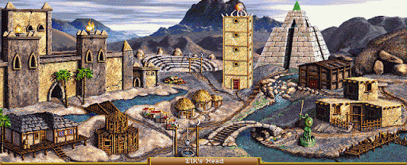
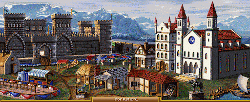
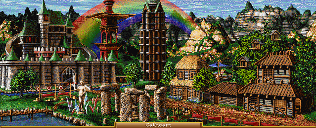
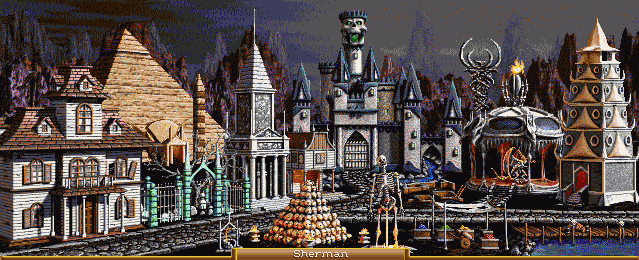
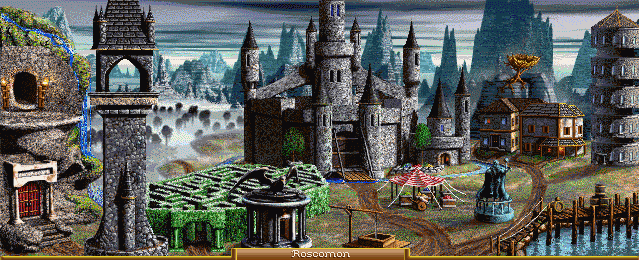

Ensimmäinen pylväs sisältää johdannon

Toinen pylväs sisältää tutkimuksen jännittävän ensimmäisen kappaleen

Kolmas pylväs sisältää johdannon tutkimuksen tärkeään taulukkoon

Kuusiruudukko näyttää varmasti selkeältä lukea

Tehdään siis viides tolppa

Kuudes tolppa tulisi olla linjassa kolmannen kanssa jotta lukija menee absoluuttisen sekaisin